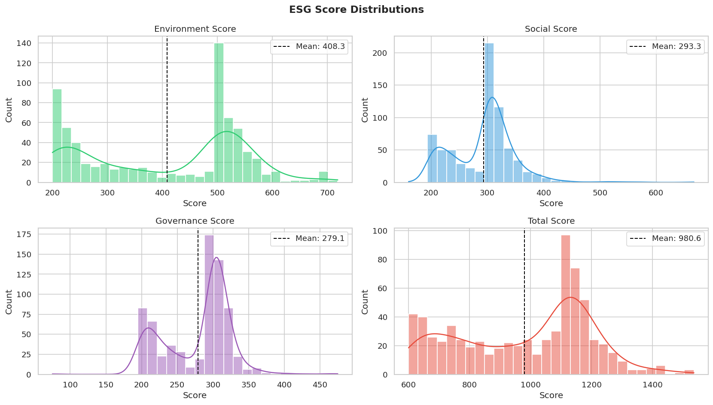
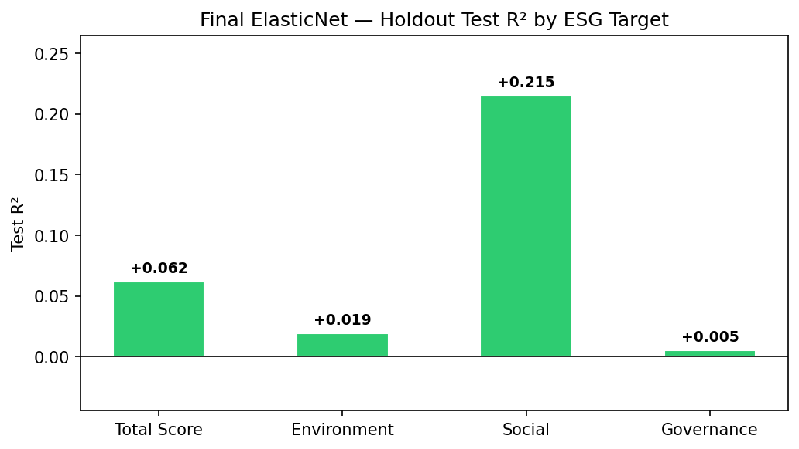
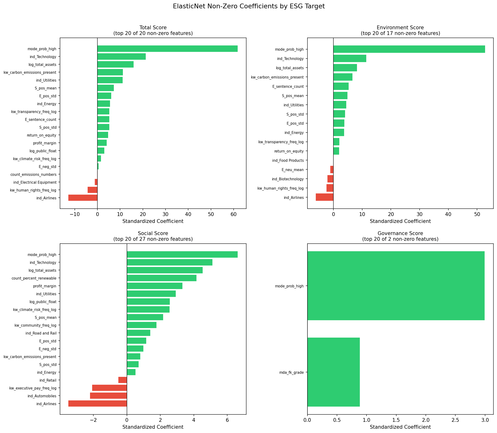
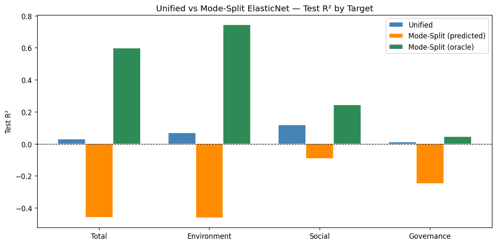

Commercial ESG ratings cost up to $30,000 per year and cover only ~10,000 companies. This project builds a machine learning pipeline that predicts corporate ESG scores using only freely available SEC 10-K filings and public financial data, making sustainability signal accessible without a subscription.
Commercial ESG ratings from agencies like MSCI and Sustainalytics cost $5,000 to over $30,000 per year and cover roughly 10,000 companies worldwide. The methodologies behind these ratings are proprietary, which means that neither the investors paying for the data nor the companies being rated understand how their scores are calculated. This creates two problems: retail investors who want to align their portfolios with personal values are priced out of the data entirely, and most public companies remain unrated and invisible to the growing pool of ESG-focused capital. The global ESG asset market exceeds $30 trillion, and yet the majority of market participants lack access to the information needed to participate in it.
Build a machine learning pipeline that predicts corporate ESG scores using only freely available public data, no proprietary feeds, no prior ESG ratings, no cost barrier. The contribution is methodological: demonstrating that free public data can extract interpretable ESG signals and that a transparent pipeline can partially replicate what commercial providers charge thousands of dollars a year for.
Target labels came from a Kaggle ESG ratings dataset aggregating scores from a major commercial rating provider for S&P 500 and adjacent index companies as of 2022, covering 709 companies across four dimensions: Total Score (0-3000), Environment, Social, and Governance (each 0-1000). Two feature sources were used entirely from free public APIs.
FY2021 annual filings retrieved for all 709 rated companies using the sec-edgar-downloader library. Three narrative sections extracted per filing: Item 1 (Business, ~67,600 chars average), Item 1A (Risk Factors, ~123,100 chars), and Item 7 (MD&A, ~96,000 chars). A quality audit identified 9 critical extraction failures, yielding 323 companies for modeling.
FY2021 balance-sheet and income-statement data retrieved for all 323 companies. Five log-transformed features retained after a multicollinearity reduction pass: total assets, public float, net income, operating income, and debt-to-assets ratio. Industry-median imputation applied for the 14 companies missing specific line items.
Each 10-K section chunked into sentences, up to 300 per section. FinBERT, a finance-specific language model, scored each sentence as positive, negative, or neutral. Per-section aggregates retained: mean probabilities, positive-to-negative ratio, net sentiment score, and sentence count. This yielded 76 sentiment features across the three sections.

Figure 1. ESG score distributions across all four targets. The Environment Score shows a characteristic bimodal structure with two distinct peaks around 200-220 and 500-520, suggesting a disclosure threshold artifact where companies crossing minimum reporting standards receive systematically higher scores. Governance is the most normally distributed pillar.
The final model used approximately 130 features across eight groups: FinBERT sentiment features (76), keyword frequency features (14), SEC financial fundamentals (5), document structure features (4), extended structural features including Flesch-Kincaid readability and quantitative density (21), a soft mode probability feature (1), and industry one-hot encoding (38).
With 323 companies and 130 features, the dataset exhibits sparse signals. ElasticNet was selected over XGBoost, LassoCV, and Ridge because its L1 regularization drives irrelevant features to exactly zero, producing more stable cross-validated performance across all four ESG targets. Critically, ElasticNet's standardized coefficients provide direct, human-readable explanations for every prediction, unlike tree-based methods requiring post-hoc SHAP analysis.
One novel feature in the pipeline is mode_prob_high, the soft probability output of a depth-3 DecisionTree classifier trained to predict whether a company falls in the high-environment disclosure tier (score ≥ 500), reflecting the bimodal threshold structure visible in the score distributions. Rather than hard mode assignment, which degraded performance, the continuous probability was used as a single feature. The classifier was fit on training data only to prevent label leakage.
| Model | Total CV R² | Notes |
|---|---|---|
| ElasticNetCV | +0.194 | Best across all targets; automatic alpha/l1_ratio selection |
| LassoCV | +0.186 | Similar to ElasticNet; slightly less stable on correlated features |
| XGBoost | +0.084 | Overfits on 323-company dataset; CV R² degrades with tuning |
| Ridge | -0.025 | Cannot perform feature selection; all features remain active |
The final ElasticNetCV model was trained on 80% of companies (n = 256) with features scaled using StandardScaler fit on training data only. Evaluation used the 20% holdout test set (n = 67 companies). All four ESG targets show positive test R².
| Target | CV R² | Test R² | MAE | RMSE | Non-zero Features |
|---|---|---|---|---|---|
| Total Score | 0.247 | 0.062 | 145.91 | 172.82 | 20 |
| Environment | 0.311 | 0.019 | 103.76 | 119.93 | 17 |
| Social | 0.142 | 0.215 | 30.87 | 39.30 | 27 |
| Governance | -0.008 | 0.006 | 36.43 | 42.81 | 2 |

Figure 2. Final ElasticNet holdout test R² across all four ESG targets. Social achieves the strongest result (Test R² = 0.215). The near-zero Governance result reflects a structural data ceiling rather than a modeling failure.

Figure 3. Top 20 non-zero ElasticNet coefficients by ESG target (standardized). Green bars increase predicted scores; red bars decrease them. The L1 penalty drove 110-128 of the 130 input features to exactly zero, leaving a sparse, interpretable set of predictors per target.
Mode probability dominates all targets. mode_prob_high carries by far the largest standardized coefficient across every target (approximately 60 for Total Score, 50 for Environment, 6 for Social, 2.5 for Governance). Its dominance reflects the bimodal score structure: once the model estimates which side of the disclosure threshold a company falls on, that single signal is more informative than any specific ESG keyword or sentiment feature. Its influence across all four pillars indicates that a company's general disclosure orientation is encoded throughout its 10-K text and financial fundamentals.
Company scale is the second consistent driver. log_total_assets carries a positive coefficient across Total Score, Environment, and Social targets. Larger, more widely-held companies receive higher ESG scores, likely reflecting both greater capacity to invest in ESG programs and rating agencies' tendency to cover large-cap firms more thoroughly.
Keyword presence confirms disclosure depth drives scores. kw_carbon_emissions_present, a binary indicator of whether carbon emissions language appears anywhere in the 10-K, is a top-five predictor for both Total Score and Environment. Companies that explicitly discuss emissions, climate risk, renewable energy, transparency, and human rights in their annual filings score higher, consistent with ESG rating methodology rewarding disclosure breadth.
Governance reveals a structural ceiling. With only 2 non-zero features and a test R² near zero, Governance is effectively unpredictable from this feature set. The two retained features, mode_prob_high and the Flesch-Kincaid readability grade of the MD&A section, are not governance-specific signals at all. Board composition, executive compensation structures, shareholder voting records, and anti-takeover provisions do not appear in 10-K narrative text in a way the model can leverage.

Figure 4. Unified vs. mode-split ElasticNet test R² by ESG target. Oracle mode-split results (green) show the genuine signal latent in the bimodal structure, with Environment reaching R² = 0.74 when given correct mode assignments. However, the mode classifier reached only 61.5% accuracy (vs. 52% baseline), and predicted mode-split (orange) degraded all targets due to misassignment applying the wrong model to entire segments of companies. The soft mode probability feature was adopted as a compromise.
The Social model (Test R² = 0.215) is the clearest success, confirming that free public data can produce a statistically meaningful predictor of social performance without proprietary feeds or prior ESG scores. For retail investors, this establishes a free directional signal with no prior zero-cost equivalent.
ElasticNet's non-zero coefficients provide a direct, human-readable explanation for every prediction, identifying which disclosure patterns and financial characteristics drive each score. Commercial black-box ratings offer no equivalent. Small and mid-cap companies can run their own filings through the pipeline for a free self-assessment.
Governance was not achievable from 10-K text and financial fundamentals at all. The model selecting only 2 non-zero governance features is a diagnostic finding: the inputs governance ratings are actually built from (board composition, shareholder voting history, anti-takeover provisions) simply do not appear in annual filings.
Incorporating proxy statements, standalone sustainability reports, and CDP disclosures would directly address the signal gap across all three pillars. An HTML-aware extraction parser could increase company coverage from 47% to near-complete. Extending to multiple filing years would enable longitudinal validation beyond this single cross-sectional snapshot.